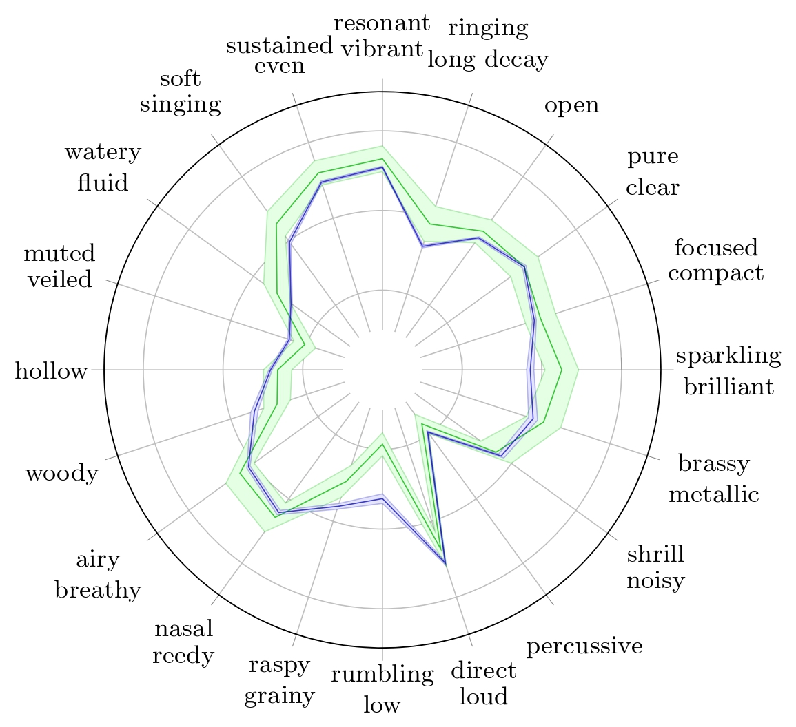
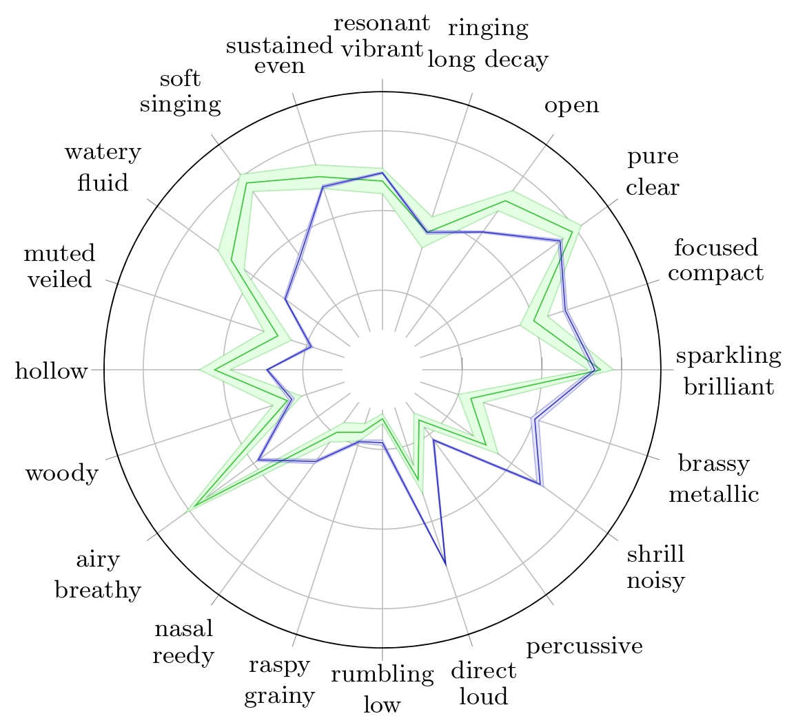
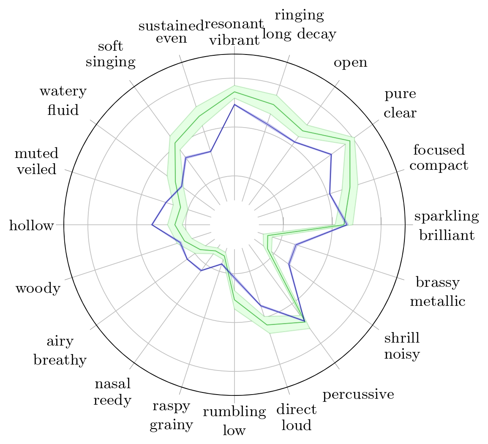
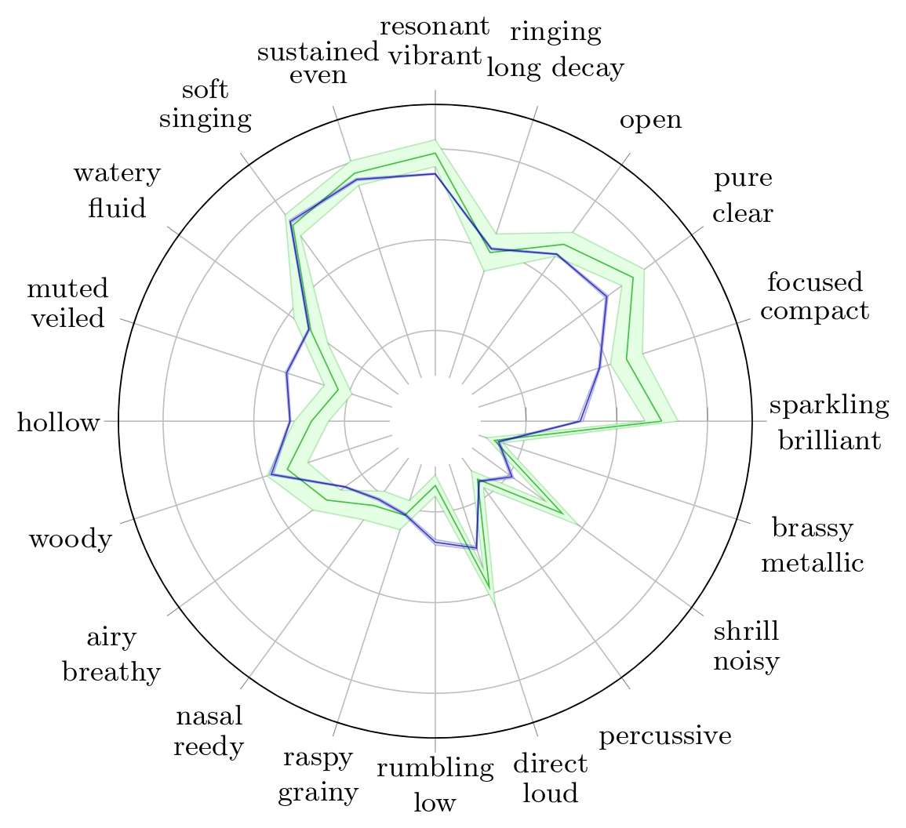
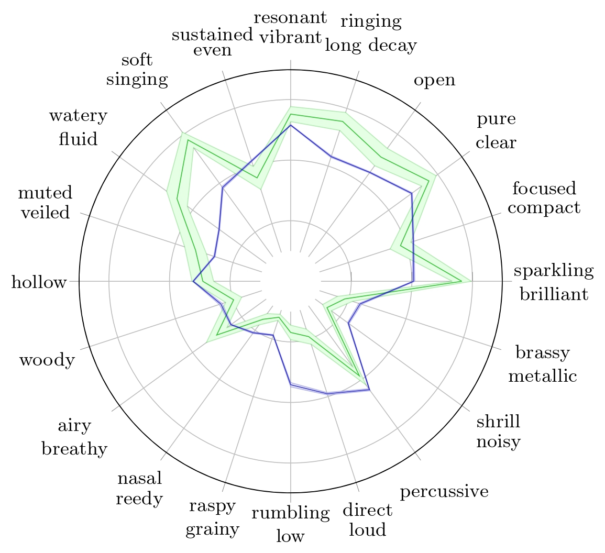
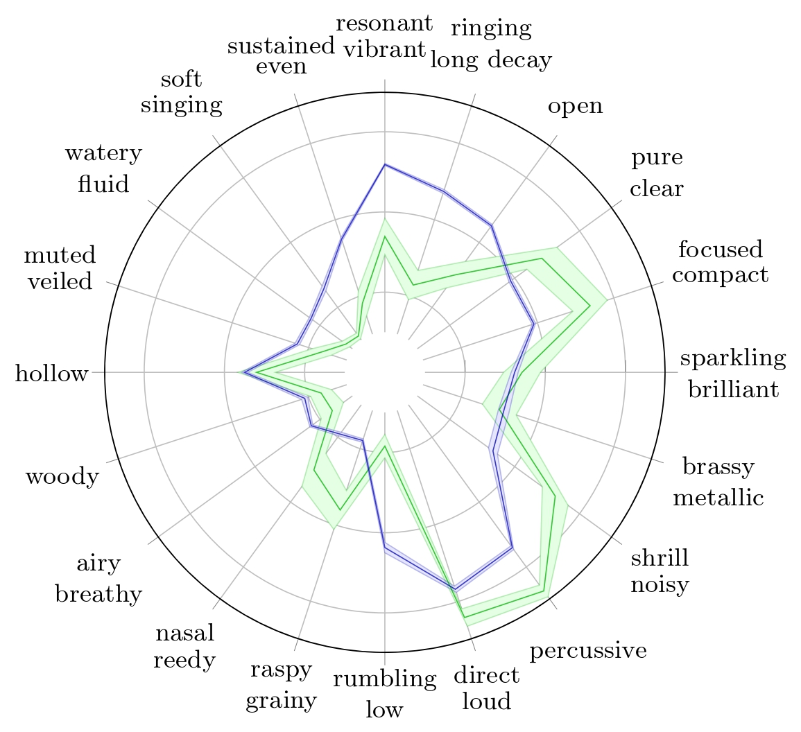
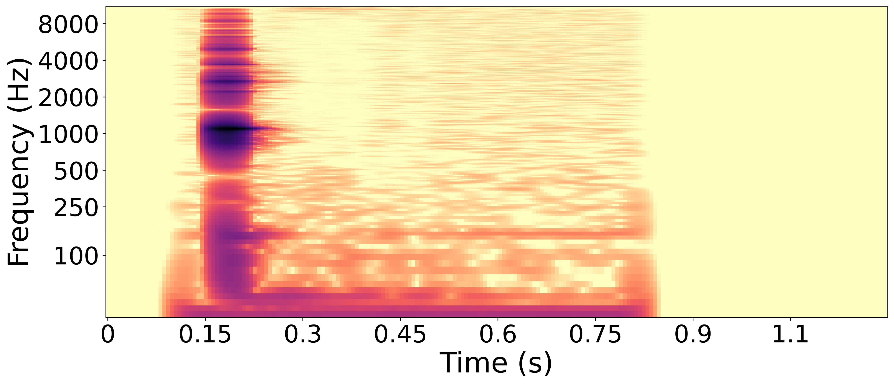
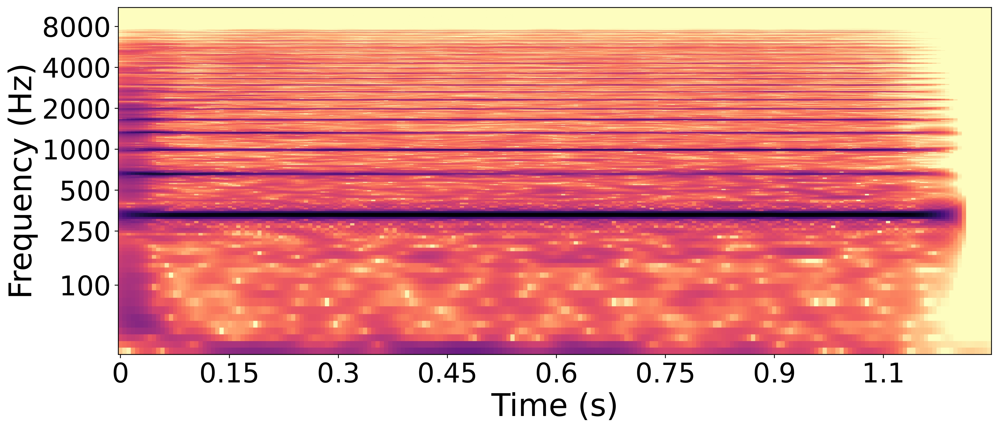
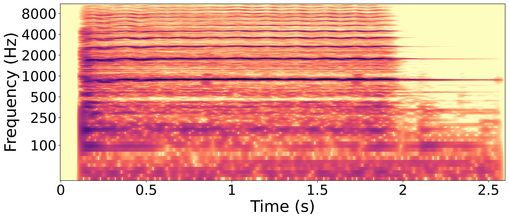
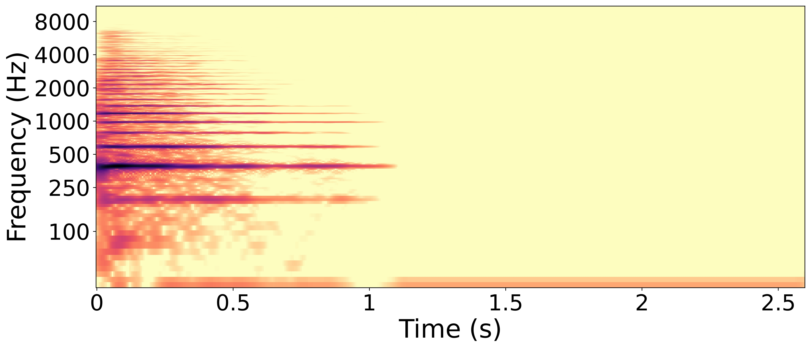

Quantitative assessment of neural audio synthesizers is now routinely conducted using distribution based metrics such as the Fréchet Audio Distance (FAD). Although this metric can be correlated with human perception, it offers limited interpretability beyond ranking different approaches. In this paper, we introduce a deep neural timbre trait predictor composed of a pretrained audio neural embedding CLAP, and a shallow learnable component. The latter is trained using the RWC musical instrument database and human judgments of 20 timbre descriptions (e.g., woody, percussive, rumbling, etc.) for 31 instruments. The resulting model shows strong correlation with average human ratings (r = 0.74, p < 0.001).
We then demonstrate the benefit of this predictor for evaluating the performance of TokenSynth, a neural sound synthesizer. First, the MAE computed over the set of generated sounds under different conditioning modalities of the model provides the same ranking as a FAD computed with the RWC database as a reference, suggesting that the proposed predictors are able to provide equivalent information on a distributional basis. Second, because the model is able to qualitatively analyze isolated sounds, we can determine which generated sounds could be improved and identify specific timbral dimensions that need adjustment.
This is the companion page for the paper: Predicting Timbre Traits for Interpretable Assessment of Musical Sound Synthesizers
Abbreviations correspondences of the instruments used in the paper
Instrument
Abbreviation
Alto Saxophone
ASax
Baritone Saxophone
BSax
Bass Drum
Bd
Bassoon
Bn
Cello
Vc
Clarinet
Cl
Contrabass
Cb
Crash Cymbal
Cym
English Horn
Eh
Flute
Fl
Glockenspiel
Glck
Harp
Hp
Harpsichord
Hs
Horn
Hn
Marimba
Mar
Oboe
Ob
Pianoforte
Pf
Piccolo
Picc
Snare Drum
Sn
Soprano Saxophone
SSax
Tenor Sax
TSax
Timpani
Ti
Triangle
Trgl
Trombone
Tb
Trumpet
Tp
Tuba
Tu
Vibraphone
Vib
Viola
Va
Violin
Vn
Wood Block
Wb
Xylophone
Xy
Comparison of Pearson correlations of the predicted timbre traits values by models and human ratings depending on the instrument
Method
ALTO SAX
BARITONE SAX
BASS DRUM
BASSOON
CELLO
CLARINET
CONTRABASS
CRASH CYMBAL
ENGLISH HORN
FLUTE
GLOCKENSPIEL
HARP
HARPSICHORD
HORN
MARIMBA
OBOE
PIANOFORTE
PICCOLO
SNARE DRUM
SOPRANO SAX
TENOR SAX
TIMPANI
TRIANGLE
TROMBONE
TRUMPET
TUBA
VIBRAPHONE
VIOLA
VIOLIN
WOOD BLOCK
XYLOPHONE
T2ASIM
-0.034**
0.058**
0.222**
0.051**
0.198**
0.173**
0.127**
-0.027
0.024**
0.230**
-0.037
0.131**
-0.077**
0.163**
0.306**
-0.085**
0.069**
0.000
-0.049*
-0.074**
-0.136**
0.278**
-0.001
0.064**
0.015*
0.156**
0.184**
0.169**
0.090**
0.224**
0.079**
TTP-RANE CLAP
0.729**
0.334**
0.834**
0.088**
0.881**
0.612**
0.101**
0.791**
0.717**
0.603**
0.800**
0.675**
0.246**
0.749**
0.669**
0.653**
0.771**
0.696**
0.519**
0.734**
0.776**
0.885**
0.924**
0.797**
0.749**
0.685**
0.663**
0.868**
0.817**
0.799**
0.703**
Human Ratings
0.569**
0.616**
0.730**
0.617**
0.672**
0.638**
0.408**
0.838**
0.635**
0.710**
0.784**
0.729**
0.600**
0.667**
0.682**
0.638**
0.716**
0.688**
0.727**
0.613**
0.500**
0.734**
0.808**
0.680**
0.757**
0.675**
0.740**
0.612**
0.699**
0.794**
0.656**
* p value under 0.01, ** p value under 0.001.
Cross-evaluation Results of TTP-RANE
We evaluate the performance of our model TTP-RANE, using a cross-evaluation approach based on instrument. That is, for each instrument, we train a model using samples from all the other instruments and then evaluate its performance on samples from the target instrument. To evaluate a given model, we thus train 31 separate models, one for each instrument, with the same architecture and training conditions.
Below are presented the predicted TTPs for 6 different types of instrument during the cross-validation by the TTP-RANE-CLAP models. In other words, for each instrument, the TTP presented below was predicted by a TTP-RANE-CLAP model that had not been trained on samples from this instrument.

Radar plots of TTP for Alto Saxophone with their respective 95% confidence interval for Reymore's results (Green); Averaged predicted TTP on synthesized alto saxophone samples (Blue);

Radar plots of TTP for Flute with their respective 95% confidence interval for Reymore's results (Green); Averaged predicted TTP on synthesized flute samples (Blue);

Radar plots of TTP for Pianoforte with their respective 95% confidence interval for Reymore's results (Green); Averaged predicted TTP on synthesized pianoforte samples (Blue);

Radar plots of TTP for Violin with their respective 95% confidence interval for Reymore's results (Green); Averaged predicted TTP on synthesized violin samples (Blue);

Radar plots of TTP for Harp with their respective 95% confidence interval for Reymore's results (Green); Averaged predicted TTP on synthesized harp samples (Blue); Predicted TTP of the sample with highest difference between 'percussive' prediction and ground truth (Red).

Radar plots of TTP for Snare Drum with their respective 95% confidence interval for Reymore's results (Green); Averaged predicted TTP on synthesized snare drum samples (Blue); Predicted TTP of the sample with highest difference between 'percussive' prediction and ground truth (Red).
TokenSynth Assessment using TTP-RANE
Synthesized Wood Block assessment
We start the analysis of the synthesis by observing the predicted TTP of the instrument with the highest MAE, here, the wood block.
Radar plots of TTP for Wood Block with their respective 95% confidence interval for Reymore's results (Green); Averaged predicted TTP on synthesized wood block samples (Blue); Predicted TTP of the sample with highest difference between 'percussive' prediction and ground truth (Red)..
We observe on the wood block averaged predicted TTP that the timbre traits with the highest errors are 'woody' and 'percussive'. While 'woody' can hardly be assessed on a spectrogram, we can make observations with respect to the 'percussive' trait.

RWC wood block sample with the lowest difference between predicted 'percussive' value and ground truth.

Synthesized wood block sample with the highest difference between predicted 'percussive' value and ground truth.
The wood block is a percussive instrument, so its ground truth value of the 'percussive' trait is about 0.93. The prediction of this trait for the synthesized sample is 0.32. We can observe on the spectrograms that the synthesized sample is sustained, contrary to the RWC sample, which decays quickly after impact. This explains why its 'percussive' trait prediction is far below the ground truth.
Synthesized Cello assessment
We can also analyze more subtle defects by observing any timbre trait of a any instrument. For instance, we can analyze the 'resonant/vibrant' trait of the cello.
The 'resonant/vibrant' ground truth value is 0.865, the highest value for this trait in the 31 instruments considered here, suggesting it is an essential timbral quality for the cello.
Radar plots of TTP for Cello with their respective 95% confidence interval for Reymore's results (Green); Averaged predicted TTP on synthesized cello samples (Blue); Predicted TTP of the sample with highest difference between 'resonant-vibrant' prediction and ground truth (Red)..

RWC cello sample with the lowest difference between predicted 'resonant-vibrant' value and ground truth.

Synthesized cello sample with the highest difference between predicted 'resonant-vibrant' value and ground truth.
The prediction of this trait for the synthesized sample is 0.66. The spectrogram of the RWC sample shows harmonics whose frequencies fluctuate slightly over time, plausibly creating a'vibrant' perceptual quality related to the pronounced vibrato in the sample. In contrast, the synthesized sample’s spectrogram lacks these frequency oscillations in its harmonics. This difference helps explain why the synthesized sample receives a lower prediction score for the 'resonant/vibrant' attribute.